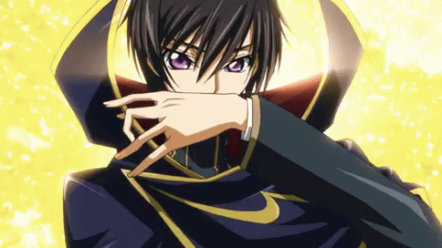

Lelouch vi Britannia

Lelouch vi Britannia (ルルーシュ・ヴィ・ブリタニア, Rurūshu vi Buritania) is the main protagonist of Code Geass: Lelouch of the Rebellion and Code Geass: Lelouch of the Rebellion R2 and plays a supporting role in side stories like Code Geass: Oz the Reflection and Code Geass: Lancelot and Guren. After he was exiled, he used the alias Lelouch Lamperouge (ルルーシュ・ランペルージ, Rurūshu Ranperūji).
He was the Eleventh Prince of the Holy Britannian Empire and the son of the 98th Emperor of Britannia, Charles zi Britannia. He was also the leader and founder of The Black Knights and the real identity of Zero. He is voiced by Jun Fukuyama, while his child self is voiced by Sayaka Ohara. His English dub voice is provided by Johnny Yong Bosch with Michelle Ruff doing Lelouch's child voice.